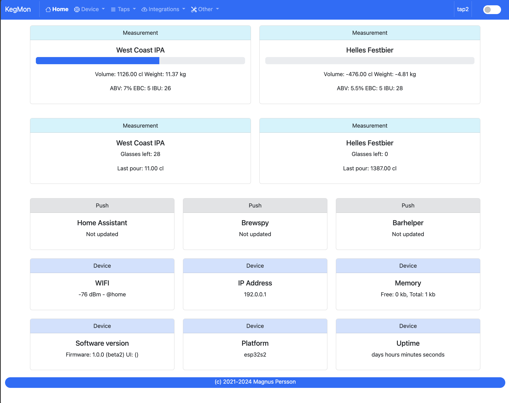

Getting started¶
Step 1 - Build the scale bases¶
First you need to build the hardware which consists of 1 or 2 scale bases and a case with the displays and esp.
Step 2 - Build the case¶
Currently there is only a schema on how this needs to be constructed.
Creating a PCB & 3D case is Work In Progress….
Step 3 - Flash the device¶
The first step is to flash the firmware, I recommend using Brewflasher as the easy option. Detailed instructions can be found here Software Installation
Step 4 - Setup WIFI¶
When the device starts up the first time it will first start an WIFI access point so that the WIFI Settings can be configured. The instructions for that can be found here Configuring WIFI
Note
Since the user interface is built using modern frameworks the device requires access to the internet for the UI to render and data to be populated. The sites that are needed are; https://cdn.jsdelivr.net/npm/bootstrap and https://code.jquery.com
Step 5 - Configuration¶
Once the device can connect to WIFI it will go into wifi setup mode and start a web server for doing the initial configuration. In order to access the device you will need to find its name or ip address.
It will broadcast a name like kegmonXXXXXX.local over mDNS. Where the XXXXXX is the unique device id. You can find the name via an mDNS browser, check your router or connect the device to a serial monitor. On windows mDNS might not work so then use the IP address instead. Once connected you will meet a web interface that looks like this.
{kind=link}
In order for the software to work properly there are a few steps that needs to be configured. When you open up the index page a selftest will be run and common issues will be shown for your action.
Configuration - Device Settings - Device Name¶
Give your device a good name.
Configuration - Calibration¶
Place the scales on a flat surface and follow the 3 steps to calibrate each scale. Use a known weight to calculate the factor. Use a quite heavy weight for best result.
Configuration - Beer¶
Enter the information on what beer you have in the kegs.
Step 4 - Completed¶
You are now done and can enjoy the KegMon software.
If you have suggestions for more awesome features, head over to the github repository and make a request.